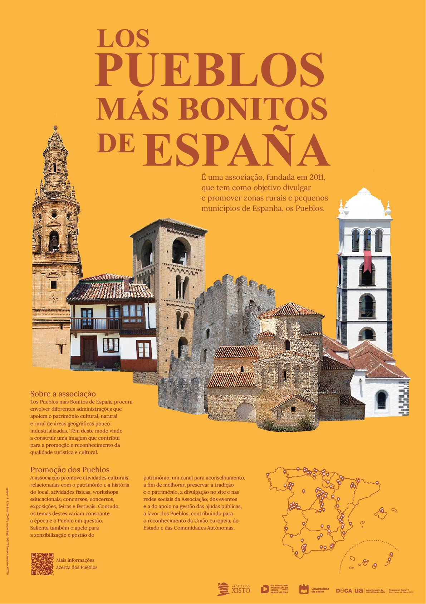
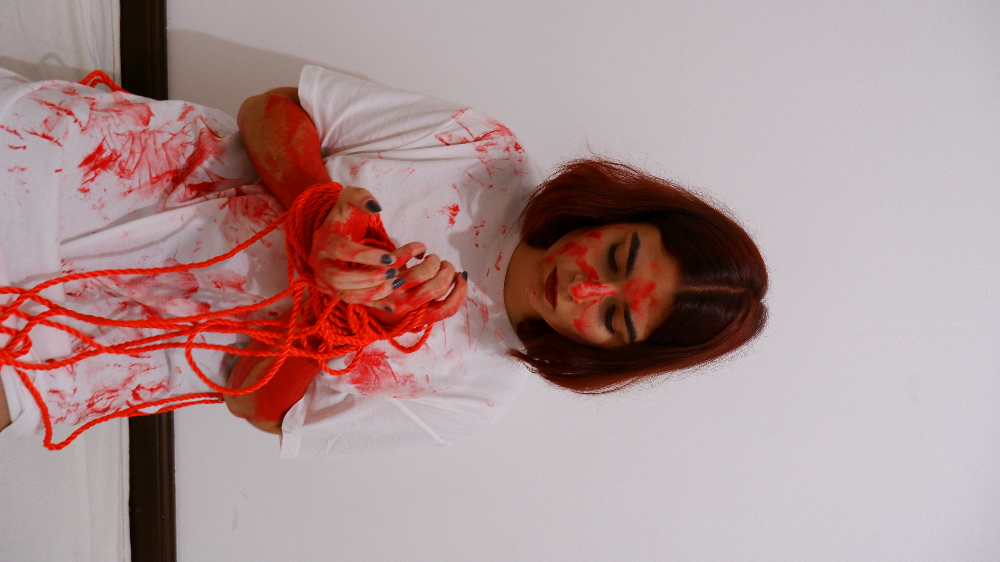

O projeto “Forno d’ Aldeia” surgiu da inexistência de um espaço de tipologia de cozinha comunitária em Janeiro de Cima, mais concretamente um forno comunitário. Assim, foi tido como mote o convívio e a comida como base do espaço comum, criando as condições necessárias para um ambiente de con- fraternidade em torno da gastronomia e do ato de comer. Este espaço foi também idealizado pela sua vertente autónoma, possibilitando uma área de convívio sem consumo obrigatório como não acontece, por exemplo, nos cafés e bares. A proposta não se resume apenas a um forno e a uma bancada, mas sim à projeção de um espaço de confeição de comida tradicional agradável, propício ao convivio e festa, dando às pessoas um sentimento de pertença e comunidade.
 O projeto do Cartaz representa iniciativas e projeto de desenvolvimento local/regional integrados em aldeias ou territórios de baixa densidade.Neste caso o tema escolhido foi dos Pueblos Más Bonitos De Espanã
 No projeto “cover me” decidi fazer um vídeo que descreve o que música “”working for the knife” transmitiu para mim- aquilo que nos motiva, nos apaixona, nos vais querer viver mas também acaba por nos aprisionar e entristecer. A animação é composta por fotos que cria uma sequência de ações e formam o vídeo
A máquina de bilhetes “B square” foi desenvolvida com o objetivo principal de acompanhar a sua identidade visual muito bem marcada, portanto os cubos foram a melhor opção a abordar. A partir daí decidiu-se experimentar diversas alternativas para chegar ao melhor resultado, sendo cubos maiores, menores, separados ou não, entre outras. A solução final de cinco cubos em que um é maior que os restantes, originou com a decisão de os rodar ligeiramente, deixando a peça mais dinâmica. A posição, orientação, tamanho e número de ecrãs foram decididos consoante experiências de ergonomia, ao mesmo tempo que comunica com as necessidades da componente de interação.


.png)